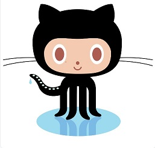

All About GitHub
- What is a version control system?
A class of systems responsible for managing changes to computer programs, documents, large websites, or other collections of information.
- What is Git?
A distributed version control system that tracks changes in any set of computer files, usually used for coordinating work among programmers collaboratively developing source code during software development.
- What is GitHub?
A web-based interface that uses Git, the open-source version control software that lets multiple people make separate changes to web pages at the same time.
- What is the difference between Git and GitHub?
Git is a version control system that lets you manage and keep track of your source code history. GitHub is a cloud based hosting service that lets you manage Git repositories.
- Who started GitHub and how was it started?
Developed by Chris Wanstrauth, P.J. Hyett, Tom Preston-Werner, and Scott Chacon using Ruby Rails, and started in February 2008.
- What company owns it now?
Microsoft
- How much does a GitHub account cost?
Individuals and Organizations on a basic level are free.
- What is the Octocat?
Is the mascot of the source-code hosting service GitHub.

Git/GitHub terms:
- repository- A central location in which data is stored and managed.
- commit- An individual change to a file (or set of files).
- fork- A new repository that shares code and visibility settings with the orginal "upstream" repository.
- push- How you transfer commits from your local repository to a remote repo.
- pull requests- Let you tell others about changes you've pushed to a branch in a repository on GitHub.
- workflows- A configurable automated process that will run one or more jobs.
- issues- Let you track your work on GitHub, where development happens.
- raw button- Opens the file in raw form, meaning that any HTML formatting disappears.
- blame button- Used to examine the contents of a file line by line and see when each line was last modified and who the author of the modifications was.